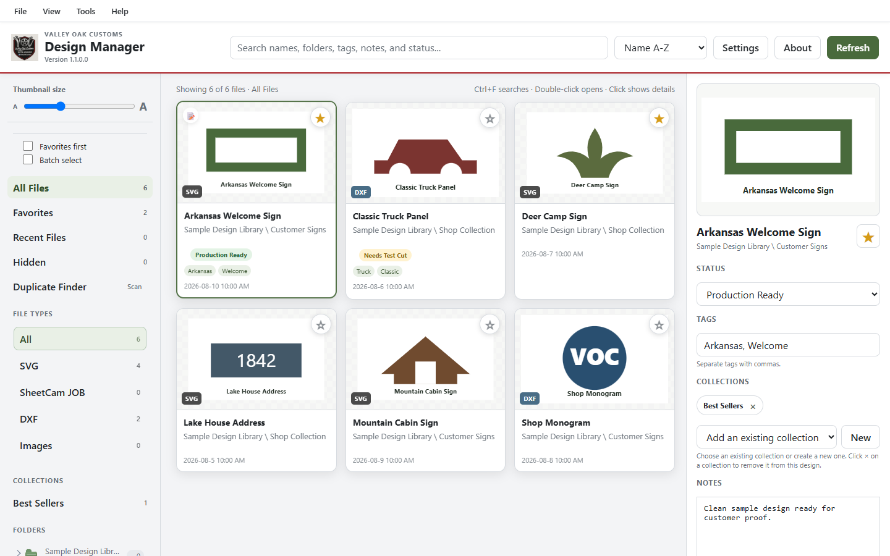
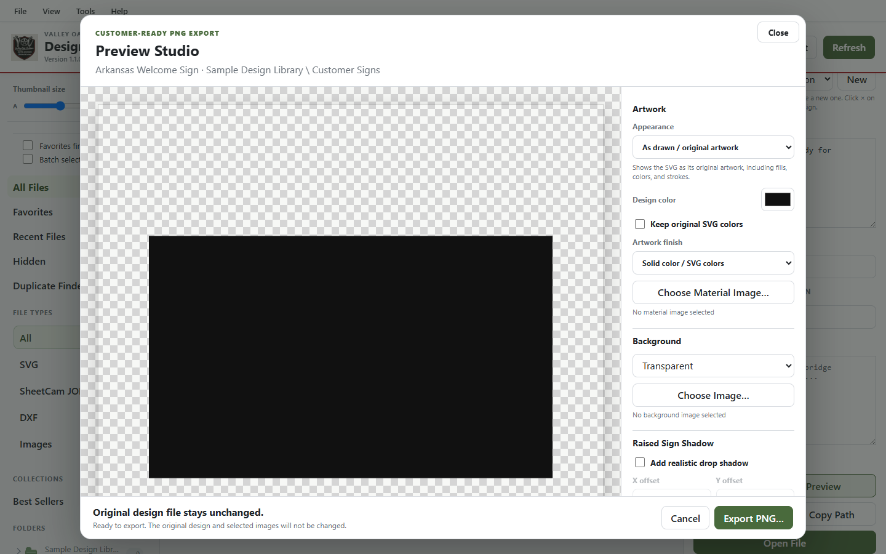
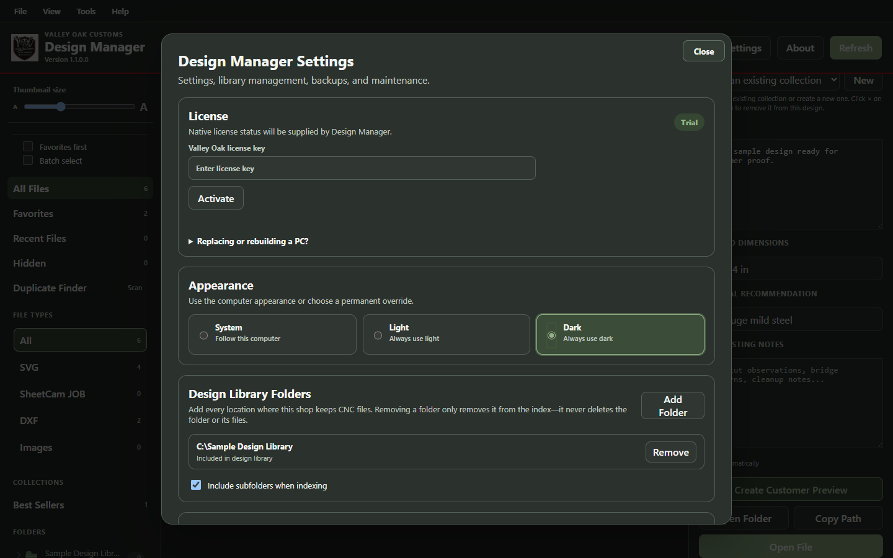

Built in the shop, for the shop
Valley Oak Software
Practical tools built around real CNC plasma, fabrication, and small-shop workflows—without turning your files or your business into somebody else's cloud subscription.
Explore Design ManagerWindows desktop software
Valley Oak Design Manager
Find it. Organize it. Open it. Make it.
Valley Oak Design Manager is a Valley Oak Customs product built around real CNC plasma and small-shop workflows. It gives SVG and DXF libraries a visual, searchable home while leaving the original design files where you put them.
- Browse and search your CNC library. See SVG and DXF previews and find designs by name, tags, notes, status, collections, favorites, or recent use.
- Keep each job together. Connect designs with related SheetCam JOB and TAP/NC programs so the files you need are easy to find.
- Share organization between shop PCs. Use a Shared Workspace for common tags, notes, favorites, collections, status, and Workflow relationships.
- Preview machine files safely. Inspect supported TAP and NC toolpaths without running machine code or changing the file.
- Keep control of your folders. Work locally or shared, use one or more library roots, and leave your CNC files where they already belong.
- Open designs in LightBurn. Send supported SVG and DXF designs to your installed LightBurn application without changing the original.
Upgrading? Install v1.4.2 over your current Design Manager installation. Existing Local Workspaces stay Local, and your library folders, saved organization, Workflow history, settings, and license remain in place.
v1.4.2 maintenance release: adds administrator-issued temporary licenses for support, evaluation, and extended trial access while retaining the v1.4.1 Viewer startup fix.
Official stable release
Checking the approved GitHub release…
Licensing
Built for ownership, not another monthly bill.
A $99 lifetime Design Manager 1.x license activates up to two PCs and continues operating offline after activation.
Early Adopter Launch — $79 for the first 15 licenses with code EARLY20. Regular price $99. Stripe confirms availability and the final price during checkout.


